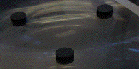
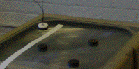
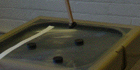
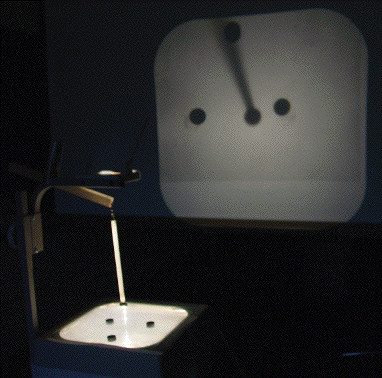

| First, use an overhead transparency to immobilize the magnets |  |
| Next, the pendulum can be made of string, |  |
| or of balsa wood. |  |
Make sure the pendulum and the stationary magnets are arranged so they attract one another.
Place the stationary magnets on the overhead projector surface and attach the pendulum to the projector head. Turn on the projector. Depending on where the pendulum is released, it can undergo complicated motion before settling over one of the magnets.
|  |
| Projected image of the pendulum and stationary magnets |
Return to Pendulum Fractal Basin Boundary